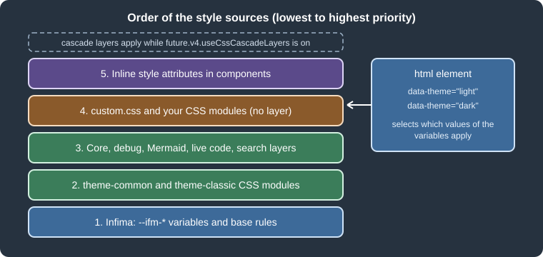
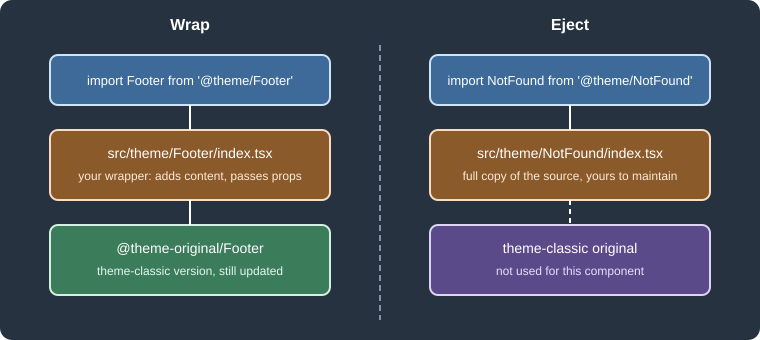

Styling, Theming and Swizzling
|
This content was generated with the assistance of AI and should be verified against the official documentation before being relied on in production. |
This page was written against Docusaurus 3.10.2 and checked on 2026-10-26. A Docusaurus site is a React application
whose look comes from a theme. The classic theme, shipped with the classic preset, is built on Infima, a CSS framework
that exposes its design decisions as CSS variables. There are three levels of customization, from the least to the most
invasive: override variables and add CSS, replace the markup of one theme component by swizzling it, or replace the
theme altogether. This page covers the first two levels. Every example was run in a scratch site generated with
create-docusaurus@3.10.2 (classic preset, TypeScript, React 19) for the Pocket Units documentation, a tiny
units-conversion library written in C# and Python.
The three levels of customization
| Level | What you change | Cost of upgrades |
|---|---|---|
CSS |
Variables, class names, |
Low. Stable names (variables and theme class names) survive minor releases. |
Wrap |
Add content around a theme component, or change its props, while the original keeps rendering. |
Low to medium. Only the props contract of the component matters. |
Eject |
Copy the full source of a theme component into the site and rewrite it. |
High. Every upgrade may require merging your copy with the new original. |
The Docusaurus documentation recommends exhausting the cheaper levels first: CSS is often enough, and wrapping is
preferred over ejecting whenever possible. Text labels do not need swizzling at all: running
npx docusaurus write-translations -l en writes a code.json file whose messages can be edited.

Figure: the sources of style of a Docusaurus page. The data-theme attribute of the html element selects which values of the variables apply.
Global styles with custom.css
The classic preset takes the path of one global stylesheet in its theme.customCss option. A site generated by
create-docusaurus already wires it:
presets: [
[
'classic',
{
theme: {
customCss: './src/css/custom.css',
},
} satisfies Preset.Options,
],
],customCss also accepts an array of paths. Everything in the file is global and is loaded after Infima, so a
declaration in custom.css overrides Infima without extra specificity (the reason is explained in the section on
cascade layers). Two further configuration keys inject CSS without going through the preset:
-
stylesheetsis an array of URLs or attribute maps; each entry becomes alinkelement in the page head, with a stylesheet relation by default. Onlyhrefis required in the object form. Use it for fonts or other third-party CSS. -
clientModulesis an array of module paths loaded on every page, and may contain.cssfiles (for example./mySiteGlobalCss.css) or JavaScript run in the browser.
Infima and CSS variables
Infima is the CSS framework of the classic theme. Its public interface is a set of variables whose names start with
--ifm-. Redefining them on :root changes the whole site at once, which is far more robust than overriding the
class names that use them. The most important family is the primary color: Infima expects the base color plus six
derived shades (dark, darker, darkest, light, lighter, lightest), which the docs suggest generating with a
color tool, and recommends a primary color that reaches at least WCAG AA contrast.
Other variables used often in documentation sites include --ifm-code-font-size, --ifm-navbar-height and
--ifm-background-surface-color. The classic theme adds a few variables of its own, such as
--docusaurus-highlighted-code-line-bg, which sets the background of highlighted code lines. The complete list is
in the Infima documentation; this page does not reproduce it.
The following custom.css gives Pocket Units its own palette and defines one variable of the site, --pocket-units-accent,
that the examples below reuse:
/* Pocket Units theme: brand colour, dark-mode variant and a few layout tweaks. */
:root {
--ifm-color-primary: #1b6ca8;
--ifm-color-primary-dark: #18608f;
--ifm-color-primary-darker: #175b87;
--ifm-color-primary-darkest: #134a6f;
--ifm-color-primary-light: #1e78bb;
--ifm-color-primary-lighter: #1f7ec2;
--ifm-color-primary-lightest: #2a92de;
--ifm-code-font-size: 95%;
--ifm-navbar-height: 3.75rem;
--pocket-units-accent: #b45309;
--docusaurus-highlighted-code-line-bg: rgba(0, 0, 0, 0.1);
}
[data-theme='dark'] {
--ifm-color-primary: #6cb6ec;
--ifm-color-primary-dark: #4aa4e6;
--ifm-color-primary-darker: #3a9ae3;
--ifm-color-primary-darkest: #1a7fc8;
--ifm-color-primary-light: #8ec7f1;
--ifm-color-primary-lighter: #9ecff3;
--ifm-color-primary-lightest: #c0e0f8;
--pocket-units-accent: #f59e0b;
--docusaurus-highlighted-code-line-bg: rgba(0, 0, 0, 0.3);
}
/* Theme class name: stable across releases, unlike hashed CSS module names. */
.theme-doc-sidebar-container {
border-right: 3px solid var(--pocket-units-accent);
}
/* Tables of conversion factors. */
.markdown table th {
text-transform: uppercase;
letter-spacing: 0.03em;
}
html[data-navbar='false'] .navbar {
display: none;
}The file builds without warnings (npm run build ends with "Generated static files in build"). In the built page the
rules above end up in the global stylesheet, and the brand-color values appear unchanged in the generated CSS file.
Which class names to target
The Docusaurus documentation distinguishes three kinds of class names, in decreasing order of stability:
-
Theme class names, such as
theme-doc-sidebar-containerordocs-doc-page. They are meant to be targeted by site authors and are the first choice. -
Infima class names (
navbar,menu,button--secondaryand so on). They are fairly stable but are an implementation detail of the theme, and the documentation discourages overriding them. -
CSS module class names, which carry a build hash. They may change in any release. If you must reach one, use an attribute selector such as
[class*='codeBlockContainer'].
Infima also offers utility classes that can be used in components and in MDX without writing CSS. The footer wrapper
shown later uses container, margin-vert--md and text--center, and the built page contains exactly those class
names.
Dark mode
The classic theme implements dark mode with an attribute on the root element. The html element carries
data-theme="light" or data-theme="dark", and Infima defines separate values for each. To adapt anything to dark
mode, either redefine the variables under [data-theme='dark'], as custom.css above does, or prefix a rule with
[data-theme='dark'] .your-class. The built page of the scratch site also sets a second attribute,
data-theme-choice, that distinguishes an explicit choice (light or dark) from system.
Choosing the initial and allowed modes
The mode is configured in themeConfig.colorMode. The three options and their defaults in @docusaurus/theme-classic
3.10.2 (read from the package source) are:
| Option | Default | Effect |
|---|---|---|
|
|
Mode used when the visitor has made no choice and the system preference is ignored. Accepts |
|
|
Hides the toggle in the navbar, so visitors cannot change the mode. |
|
|
Uses the operating-system preference for visitors without a stored choice. The toggle becomes a three-state cycle: light, dark and system. |
The site generated by create-docusaurus sets respectPrefersColorScheme: true. With that option, the inline script
that the theme adds to every page chooses the mode in this order: the docusaurus-theme query parameter, the value
stored in the browser, then prefers-color-scheme. The documentation recommends the query parameter for embedding a
page in a frame with a fixed mode (?docusaurus-theme=dark). Any query parameter named docusaurus-data-<key> is
copied to the html element as data-<key>, which is useful for embedded views; the html[data-navbar='false'] rule in
custom.css above hides the navbar for ?docusaurus-data-navbar=false.
Where the choice is stored
The choice is saved in localStorage under the key theme. The built page of the scratch site reads the key
theme-9f6: the site was generated with future.v4: true, and one of its flags, siteStorageNamespacing, appends a
namespace derived from url and baseUrl to every storage key (the storage option of the configuration controls the
type and namespace). Enabling that flag on an existing site resets the stored choice of returning visitors, who see
the default mode once.
Reading and setting the mode from React
Components that need to know the mode use the useColorMode hook of @docusaurus/theme-common. It returns
colorMode (the effective mode), colorModeChoice (the explicit choice, or null for system), setColorMode,
isDarkTheme, setLightTheme and setDarkTheme. This component switches the mode, and was used in the scratch site:
import type {ReactNode} from 'react';
import {useColorMode} from '@docusaurus/theme-common';
export default function ThemeProbe(): ReactNode {
const {colorMode, setColorMode} = useColorMode();
return (
<button
type="button"
className="button button--secondary button--sm"
onClick={() => setColorMode(colorMode === 'dark' ? 'light' : 'dark')}>
Current mode: {colorMode}
</button>
);
}npm run typecheck (tsc) accepted the file. For images that must differ per mode, the theme provides
@theme/ThemedImage, which renders one img per mode and hides the wrong one with CSS. In the built scratch page the
two images carried the classes themedComponent--light and themedComponent--dark, with generated hash suffixes:
import ThemedImage from '@theme/ThemedImage';
import useBaseUrl from '@docusaurus/useBaseUrl';
<ThemedImage
alt="Pocket Units logo"
sources={{
light: useBaseUrl('/img/logo-light.svg'),
dark: useBaseUrl('/img/logo-dark.svg'),
}}
/>The scratch run used the same file for both modes because the generated site has only one logo; the markup that the build produced is the one described above.
CSS modules
Any file named *.module.css is a CSS module: its class names are rewritten with a hash at build time, so they
cannot clash with the theme or with other components, and the import gives an object that maps your names to the
generated ones. The scratch site has a UnitBadge component for Pocket Units with its module:
import type {ReactNode} from 'react';
import clsx from 'clsx';
import styles from './styles.module.css';
type Props = {
symbol: string;
children: ReactNode;
highlighted?: boolean;
};
export default function UnitBadge({symbol, children, highlighted}: Props): ReactNode {
return (
<span className={clsx(styles.badge, highlighted && styles.highlighted)}>
<code className={styles.symbol}>{symbol}</code> {children}
</span>
);
}.badge {
display: inline-flex;
align-items: center;
gap: 0.35rem;
padding: 0.1rem 0.6rem;
border: 1px solid var(--ifm-color-primary);
border-radius: var(--ifm-global-radius);
background: var(--ifm-background-surface-color);
}
.symbol {
color: var(--pocket-units-accent);
}
.highlighted {
background: var(--ifm-color-primary-lightest);
color: #111;
}
[data-theme='dark'] .highlighted {
background: var(--ifm-color-primary-darkest);
color: #fff;
}The module uses Infima variables (so it follows the palette) and the data-theme attribute for the dark variant. Used
in an MDX document as <UnitBadge symbol="ft" highlighted>foot</UnitBadge>, the build produced
<span class="badge_tMJj highlighted_BDXI">, where the suffixes are the hashes. Because the hashes change when the
file changes, never copy them into global CSS. A CSS module needs no configuration, and the same mechanism hashes the
module CSS of the theme itself, which is the reason the documentation warns against targeting those names.
Two other flavours of CSS are mentioned in the documentation. Sass or SCSS needs the unofficial community package
docusaurus-plugin-sass plus sass and an entry in plugins; after that customCss can point to a .scss file and
*.module.scss works. In a TypeScript project, add the plugin name to compilerOptions.types of tsconfig.json. This setup
was not installed in the scratch site. CSS-in-JS libraries are described by the documentation as work in progress, with
possible display quirks, so they are best avoided in a documentation site.
Cascade layers
A recurring problem with a framework stylesheet is specificity: a rule of yours that is shorter than an Infima rule
loses. Docusaurus has an opt-in plugin that puts the CSS of the framework in named CSS cascade layers. It is switched on
with the future flag future.v4.useCssCascadeLayers, one of the flags that future.v4: true enables together (see
Docusaurus Faster and v4 Readiness). The
configuration reference says the layers are the ones planned to be applied by default in Docusaurus v4.
The layer names and their order are defined in the source of @docusaurus/plugin-css-cascade-layers, from the lowest
priority to the highest:
docusaurus.infima
docusaurus.theme-common
docusaurus.theme-classic
docusaurus.core
docusaurus.plugin-debug
docusaurus.theme-mermaid
docusaurus.theme-live-codeblock
docusaurus.theme-search-algolia.docsearch
docusaurus.theme-search-algoliaA file is assigned to a layer by its path (the plugin matches paths inside node_modules, or in the monorepo of
Docusaurus). The CSS of the site, such as custom.css and your own CSS modules, is not on those paths and stays
unlayered. In the CSS spec, unlayered declarations beat layered ones whatever their specificity, so site CSS always wins
over Infima and the theme. In the built scratch site the stylesheet starts with @layer docusaurus.infima{:root{...,
the rule .theme-doc-sidebar-container{border-right... of custom.css is outside any layer, and the stylesheet also
declares the plugin layers listed above.
The flag is a small behavioral change, so verify the look of the site after turning it on.
Layout notes: the mobile breakpoint
The classic theme switches between the desktop and the mobile layout at a viewport width of 996 pixels, using plain
media queries. The documentation points out that changing that breakpoint in your CSS is not enough: components that
call the useWindowSize hook, such as the navbar and the docs sidebar, must be swizzled so that they pass an explicit
window size option to it. This is a good example of a customization that CSS alone cannot finish.
Swizzling
Swizzling means copying a component of a theme into the site, in the folder src/theme, so that Docusaurus uses your
file in place of the theme file. The theme files are addressed with the alias @theme/ComponentName; Docusaurus
resolves the alias to src/theme/ComponentName when it exists and to the theme otherwise. The documentation notes that
the command has no internal magic beyond creating those files, so a swizzled component can also be created by hand.
Wrap and eject
There are two ways to swizzle:
-
Wrap creates a component that renders the original one. The original is imported through the alias
@theme-original/ComponentName, which refers to the theme version without causing an import loop. You can render content before or after it or change the props. The code to maintain stays small. -
Eject copies the full source of the original (and of the subcomponents it needs) so you can rewrite it. After an upgrade you must merge any changes of the original yourself. The documentation advises to re-run the eject command after an upgrade, compare with
git diff, and keep a comment at the top of the file that lists your changes.

Figure: the two ways to swizzle. A wrapper keeps the original component in use; an ejected copy replaces it.
The swizzle command
npx docusaurus swizzle [themeName] [componentName] [siteDir]The command is interactive when options are missing: it asks for the theme, the component (typing part of a name filters the list), the action and the language. The options of the CLI in 3.10.2 are:
| Option | Meaning |
|---|---|
|
Print the available components and their safety status instead of swizzling. With a theme name it lists only that theme. |
|
Create a wrapper around the original. |
|
Copy the original source. |
|
Copy the TypeScript variant of the files when the theme has one. |
|
Copy the JavaScript variant of the files. |
|
Allow swizzling of unsafe components without the confirmation prompt. |
|
Path of the configuration file when it is not |
Source: Docusaurus docs: CLI
With npm the flags of a script must be separated by --, as in the documented example
npm run swizzle @docusaurus/theme-classic Footer -- --eject. In the scratch run with npm 11.19.0, the arguments written
this way after the component name reached the CLI together with the literal --; the flags were then ignored and the
language prompt appeared. Calling npx docusaurus swizzle directly avoids the problem, and all the outputs below were
produced that way. After creating or deleting a swizzled file, restart the development server so that Docusaurus
detects the change. To remove a swizzle, delete its files under src/theme.
Source: Docusaurus docs: Swizzling
Safe, unsafe and forbidden
Theme authors label each component and each action, and the CLI prints the label. The legend printed by
swizzle --list in 3.10.2 says:
| Status | CLI option | Meaning |
|---|---|---|
Safe |
Designed to be swizzled. The swizzled component stays compatible with minor upgrades of the theme. |
|
Unsafe |
|
Allowed but risky: the theme may release breaking changes within a minor version, and you maintain the component. |
Forbidden |
Not meant to be swizzled; the CLI refuses it. |
The status is per action. The listing of @docusaurus/theme-classic 3.10.2 contains 220 entries (the documentation says
"about 100"; the number grows with each release). The scratch run counted them by the pair of statuses (wrap and eject):
| Wrap / Eject | Count | Examples |
|---|---|---|
Safe / Safe |
40 |
|
Safe / Unsafe |
1 |
|
Forbidden / Safe |
6 |
|
Forbidden / Forbidden |
6 |
|
Forbidden / Unsafe |
1 |
One entry of the listing |
Unsafe / Unsafe |
166 |
|
A practical reading of the table: prefer a safe component, start from the highest-level safe component that reaches
your goal, and read the description printed in the listing. The documentation recommends working down the tree of
components from the route component (@theme/BlogPostPage for blog posts, for example) and deleting extra swizzled
files, so only the necessary ones stay. If the change you want is only possible by swizzling an unsafe component, the CLI
output points to a discussion where the use case can be reported to the maintainers.
A wrapper: adding a line above the footer (safe)
The footer is a safe component for both actions, so the example wraps it:
npx docusaurus swizzle @docusaurus/theme-classic Footer --wrap --typescriptThe command printed:
[SUCCESS]
Created wrapper of Footer from @docusaurus/theme-classic in
- ".../src/theme/Footer/index.tsx"The generated file only renders the original. Pocket Units adds a line of text above it:
import React, {type ReactNode} from 'react';
import Footer from '@theme-original/Footer';
import type FooterType from '@theme/Footer';
import type {WrapperProps} from '@docusaurus/types';
type Props = WrapperProps<typeof FooterType>;
export default function FooterWrapper(props: Props): ReactNode {
return (
<>
<div className="container margin-vert--md text--center">
Pocket Units is a demonstration library. Conversion factors are rounded.
</div>
<Footer {...props} />
</>
);
}Source: Docusaurus docs: Swizzling
npm run build finished successfully and the sentence appears in the built HTML of every page. The same wrapper
pattern fits the documented use case of adding a comment widget below each blog post. Note the typing helper
WrapperProps: the wrapper receives the props of the original component, and passing them on with {...props} is what
keeps the wrapper compatible when the component gains a prop.
An eject: replacing the 404 page (safe)
NotFound is safe to eject, and the command copies the component together with the subcomponent it depends on:
npx docusaurus swizzle @docusaurus/theme-classic NotFound --eject --typescript[SUCCESS]
Ejected NotFound from @docusaurus/theme-classic to
- ".../src/theme/NotFound/index.tsx"
- ".../src/theme/NotFound/Content/index.tsx"Edit the copies to change the markup or the text; the rest of the site continues to use the theme versions of the other
components. The ejected file still imports @theme/Layout and @theme/NotFound/Content. If you only need to change the
text in NotFound/Content, delete the generated NotFound/index.tsx so that the theme version of that file stays
maintained for you.
An unsafe component and the confirmation prompt
Ejecting DocSidebar is unsafe. Without --danger, the CLI prints a warning and asks:
Swizzle action eject is unsafe to perform on DocSidebar.
It is more likely to be affected by breaking changes in the future
If you want to swizzle it, use the `--danger` flag, or confirm that you understand the risks.
? Do you really want to swizzle this unsafe internal component? ›
❯ NO: cancel and stay safe
YES: I know what I am doing!
[Exit]With --danger the ejection happens at once and copies seven files (DocSidebar/index.tsx, Desktop/index.tsx,
Desktop/styles.module.css, Mobile/index.tsx and the CollapseButton and Content subcomponents with their
modules). That is the cost of ejecting a component with a deep tree: each of those files is now yours. In the same
experiment the wrap of DocSidebar (safe) created only DocSidebar/index.tsx, and a later eject of the same component
replaced that file without asking, so wrap and eject of one component share the target file.
Forbidden and unknown components
Asking for something the theme forbids gives an error, and a mistyped name gives a suggestion:
$ npx docusaurus swizzle @docusaurus/theme-classic MDXComponents --wrap --typescript
[ERROR]
Swizzle action wrap is forbidden for component MDXComponents
$ npx docusaurus swizzle @docusaurus/theme-classic Nope --eject --typescript
[ERROR] Component Nope not found.
[INFO] Did you mean Logo?MDXComponents is eject-only because it is the map of components available to every MDX document; its use is described
in MDX and React Components.
Components that are not swizzled: Root
Some customizations are done with a file that the CLI does not generate. src/theme/Root.js (or .tsx) is rendered at
the very top of the React tree, above the layout, and never unmounts during navigation. The documentation recommends it
for state that must survive navigation, or for React context providers. It must be created manually.
Choosing a technique
Figure: a decision flow from the cheapest to the most expensive technique.
Pitfalls and version notes
-
Hashed class names of CSS modules, including those of the theme, change between releases; target theme class names or variables instead, or use an attribute selector as the last resort.
-
Overriding a variable on
:rootaffects light mode and, unless redefined, dark mode too. Define the dark values under[data-theme='dark'], and check the contrast of the primary color in both modes. -
A component swizzled from an unsafe entry may stop compiling or behave differently after a minor upgrade. Keep a list of the ejected components of the site in the repository README, and review them with
git diffafter upgrading. -
Prefer
--wrapfor a change of content. Ejecting a component only to add a line of text copies code that the theme would otherwise keep up to date for you. -
If the stored dark-mode choice appears to reset for returning visitors after a configuration change, check
future.v4.siteStorageNamespacingand thestorageoption, which change the key under which it is saved. -
With cascade layers on, unlayered rules, such as the ones in
custom.css, win over the layered theme rules whatever their specificity, and!importantdeclarations reverse the order of layers, as the CSS specification defines. -
The development server does not pick up new files in
src/themeuntil it is restarted. -
The Sass plugin, Tailwind and CSS-in-JS libraries are not part of Docusaurus. The documentation lists only the Sass plugin as an option, and it is community-maintained, so check that it supports the Docusaurus version you use.
-
Search, a component that is commonly swizzled, has its own page: Search.
The browser behavior described for dark mode (the order in which the inline script picks the mode, the query parameters, and the toggle cycle) is taken from the Docusaurus documentation and the built output; the scratch run inspected the generated HTML and CSS, but did not drive a browser to click the toggle.